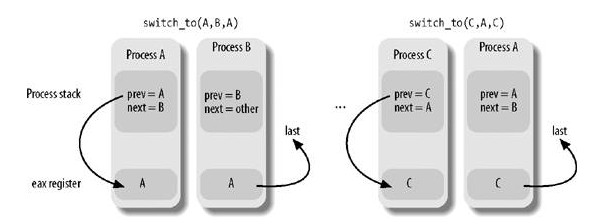
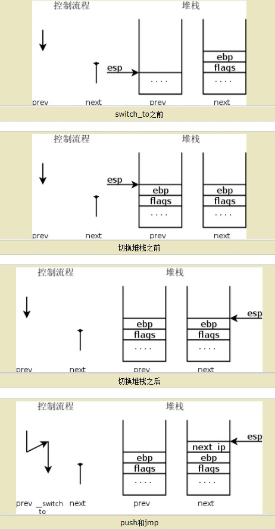
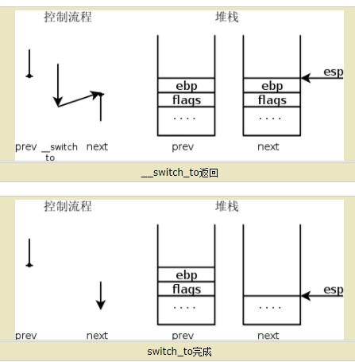

Linux内核学习——Linux进程切换
Linux内核的进程切换可谓精彩绝伦，遗憾的是，ULK对此的介绍不够详尽，而毛批中也是一带而过，所以一时云里雾里。本文是我参考了大量资料，反复研磨后对Linux内核中进程切换的一点理解。
Linux内核学习——Linux进程切换
对于Linux这种分时操作系统来说，内核必须有能力挂起CPU正在运行的进程，以复杂的策略调度另外一个进程。这就是进程切换。在Linux中，这也常被称为任务切换或上下文切换。
Linux的进程和任务是一回事，按我的理解，一般内核进程叫任务，用户进程叫进程。
每个进程有自己的地址空间，相互隔离，而CPU是共享的。于是，进程切换时，CPU寄存器的L/S(Load and Save)大法需要内核来谨慎的完成。进一步说，折腾寄存器的这组数据叫硬件上下文，它是进程可执行上下文的一个子集。硬件上下文的一部分放在TSS段，剩余部分放在内核态堆栈。
进程切换只发生在内核态!
任务状态段
TSS段在我另一篇文章中简单提到过(Linux内存寻址)，它用来存放硬件上下文。尽管Linux根本不使用硬件上下文切换，但还是强制它为系统中每个不同CPU创建一个TSS，原因有二： - x86的一个CPU从用户态切换到内核态时，它就从TSS中获取内核态堆栈的地址(中断和异常中的sysenter->系统调用)。 - 用户态进程试图通过in或out指令访问一个I/O端口时，CPU需要访问存在TSS的I/O许可权位图以检查该进程是否有访问端口的权利。
TSS的结构定义成tss_struct：
1 | |
每次进程切换时，内核更新TSS的某些字段以便相应CPU控制单元可以安全检索到它需要的信息。因此，TSS反映了CPU上当前进程的特权级，但对于没有运行的进程来说，并未保留TSS（TSS跟随CPU而不是进程，这和intel的初衷不同）。
每个TSS有自己的8字节任务状态段描述符(TSSD)，放在GDT中，CPU的tr寄存器包含相应TSS的TSSD，同时包含两个隐藏的非编程字段：TSSD的Base和Limit域。关于这些的设计，可以参考我之前写的“Linux内存寻址”。
所以，Linux的TSS跟着CPU走，那么进程切换时，进程的硬件上下文就必须保存在别处。于是，Linux的每个进程描述符包含一个类型为thread_struct的thread字段，只要进程被换出，就把硬件上下文存于此。
1 | |
可以看到诸如eip，esp，fs，gs等寄存器放在了这里，但是一些通用的eax等寄存器却不在这里（他们在内核堆栈）。
进程切换的入口
进程切换只可能发生在schedule()函数中，这个函数涉及了复杂的调度策略，在选出一个合适的待换入进程后，执行进程切换。 本节，我们只关心进程切换。
进程切换本质上由两步组成：切换页全局目录以安装一个新的地址空间；切换内核态堆栈和硬件上下文。
忽略调度策略，schedule()对进程切换的处理：
1 | |
此时prev和next指向换出和换入的进程，进入context_switch函数：
1 | |
晦涩的switch_to
这个switch_to是个宏，它很有意思，因为除了prev和next外，还有个last参数：
1
2
3
4
5
6
7
8
9
10
11
12
13
14
15
16
17
18
19
20
21
22
23
24
25
26
27
28
29
30
31
32
33
34
35
36
37
38
39
40
41
42
43
44
45
46
47
48
49
50
51
52
53
54
55
56
57/**
* 进程切换时，切换内核态堆栈和硬件上下文。
* prev-被替换的进程
* next-新进程
* last-在任何进程切换中，到三个进程而不是两个。假设内核决定暂停A而激活B，那么在schedule函数中，prev指向A而next指向B。
* 当切换回A后，就必须暂停另外一个进程C。而LAST则指向C进程。
*/
#define switch_to(prev,next,last) do { \
unsigned long esi,edi; \
/**
* 在真正执行汇编代码前，已经将prev存入eax，next存入edx中了。
*/
/**
* 保存eflags和ebp到内核栈中。必须保存是因为编译器认为在switch_to结束前，
* 它们的值应当保持不变。
*/
asm volatile("pushfl\n\t" \
"pushl %%ebp\n\t" \
/**
* 把esp的内容保存到prev->thread.esp中
* 这样该字段指向prev内核栈的栈顶。
*/
"movl %%esp,%0\n\t" /* save ESP */ \
/**
* 将next->thread.esp装入到esp.
* 此时，内核开始在next的栈上进行操作。这条指令实际上完成了从prev到next的切换。
* 由于进程描述符的地址和内核栈的地址紧挨着，所以改变内核栈意味着改变当前进程。
*/
"movl %5,%%esp\n\t" /* restore ESP */ \
/**
* 将标记为1f的地址存入prev->thread.eip.
* 当被替换的进程重新恢复执行时，进程执行被标记为1f的那条指令。
*/
"movl $1f,%1\n\t" /* save EIP */ \
/**
* 将next->thread.eip的值保存到next的内核栈中。
* 这样，_switch_to调用ret返回时，就会跳转到next->thread.eip执行。
* 这个地址一般情况下就会是1f.
*/
"pushl %6\n\t" /* restore EIP */ \
/**
* 注意，这里不是用call，是jmp，这样，上一条语句中压入的eip地址就可以执行了。
*/
"jmp __switch_to\n" \
/**
* 到这里，进程A再次获得CPU。它从栈中弹出ebp和eflags。
*/
"1:\t" \
"popl %%ebp\n\t" \
"popfl" \
:"=m" (prev->thread.esp),"=m" (prev->thread.eip), \
/* last被作为输出参数，它的值会由eax赋给它。 */
"=a" (last),"=S" (esi),"=D" (edi) \
:"m" (next->thread.esp),"m" (next->thread.eip), \
"2" (prev), "d" (next)); \
} while (0)
这个宏是用AT&T汇编语法写的，不是很好理解，虽然上述代码根据ULK的描述，已一一按桩插入，但我们还是展开成最终反汇编码说明。
AT&T汇编语法的基础知识，可以参考毛批的第一章。
- eax和edx分别保存prev和next:
1
2movl prev, %eax
movl next, %edx - eflags和ebp保存到prev的内核堆栈：
1
2pushfl
pushl %ebp - 把esp的内容保存到prev->thread.esp中使得该字段指向prev内核堆栈栈顶：
484(%eax)表示内存单元地址为eax+484，也就是prev->thread.esp。
1
movl %esp, 484(%eax) - 把next->thread.esp装入esp。esp指向了next的内核栈，就代表此时内核切换到了next的内核栈。
1
movl 484(%edx), %esp - 把标记为1的地址放入prev->thread.eip，这表示替换的进程再次恢复执行时，restore出eip，从1处继续执行：
480(%eax)就是prev->thread.eip
1
movl $1f, 480(%eax) - 对称的，把next->thread.eip的值（大概率就是上一次压入的1的地址，如果它未被换出过，那情况要复杂一些）压入next内核栈：
1
pushl 480(%edx) - 跳到__switch_to() C函数：
1
jmp __switch_to - 从__switch_to回来后，实际上已经变成了next进程，而__switch_to实际上内部是通过ret返回的，那么返回地址也就刚好是push的next->thread.eip。玩安全的想必非常熟悉，这是经典的push+jmp+ret伪造call指令。于是，next执行从1标签开始的指令，进行restore，而此时因为堆栈早已换成next自己的，所以pop出来的也就是上一次被换出时保存的ebp和eflags。
1
2
31:
popl %ebp
popfl - 拷贝eax的内容到switch_to的第三个参数last标记的内存区域中：
prev和next是进程堆栈中的两个局部变量，那么对于两个进程来说，我们把prev标志的称为A，next标志的称为B。A的进程堆栈中有着prev和next，在切换前夕，prev是A，next是B。当跳到__switch_to后，ret回来，此时就是进程B的堆栈，而B的堆栈中同样有上一次的prev和next，B的prev应该是B本身，而B的next应该是上一次B切换到C时的C。而我们设计上，希望从A切换到B时，不仅能够保证A的prev和next正确，还要保证切换到B后，B的prev也是正确的。 如果只是单纯的A->B->A在不会有问题，他们的prev和next都是正确的，但是如果A->B，C->A就会有问题:（注意，这里换入的进程的prev还没有被eax重置，这一忽略曾让我怀疑人生）
1
movl %eax, last

由于A此前在切换到B时，堆栈上prev和next保存的分别是A和B，那么如果我们从C到A时，A的prev依然是A，这就有问题了。A的prev明明应该是C才对（这就是前面说的我们不仅要保证换出的C的prev和next正确，换入的A的prev也应该正确，至于A的next，who care?等它再次切换时自己就处理好了）。本质上来讲，这其实就是堆栈切换后，局部变量因为他的含义需要相应调整的故事。 所以switch_to宏多引入了一个last变量，last实际上就是prev，__switch_to返回值eax实际上就是A的prev，因为执行__switch_to时prev变量指向的还是A的prev，而ret回去后，prev变量就是B的堆栈上的prev。因此，借由__switch_to前传递A的prev，ret后再返回这个A的prev值给B，用于覆盖B的prev，那么B的prev由谁覆盖？答案就是last，eax值返回给last，用last覆盖B的prev，从而保持了prev的字面意义。
如果说prev和next是变化的状态量，随着进程切换而改变意义，那么这个一开始和prev一致的last就是个过程量，用于切换后以A的prev正确的重置B的prev。prev和next是输入型变量，last是输出型变量，用于指明切换后被覆盖的地址。
1
movl %eax, last
这一过程非常的复杂，我自己也是研究了好久才弄明白，但是当我捋清了整个流程，便惊叹于内核设计的绝伦精妙。
我在网上淘金时，挖到了描述这一过程不错的图例：
 
__switch_to函数
1 | |
可以看到，进程切换中硬件上下文的实质性工作都是在这里处理的，而__switch_to返回值就是传入的prev_p，也就是switch_to中的prev局部变量，这个变量在执行jmp __switch_to之前代表着A的prev。
值得一提的是，__switch_to的函数参数不是通过栈传递的，而是指定了eax和edx寄存器，__switch_to什么都没有做，只是在对应Makefile中写上了KBUILD_CFLAGS += -msoft-float -mregparm=3 -freg-struct-return，-mregparm=3表示默认使用3个寄存器传参。
一言以蔽之，进程切换的关键操作无非就是切换地址空间、切换内核堆栈、切换内核控制流程以及必要寄存器的现场保护与还原。
参考文献
- x86体系结构下Linux-2.6.26的进程调度和切换
- linux 进程调度switch_to宏浅析+系统执行过程总结
- 【内核】进程切换 switch_to 与 __switch_to
- 《深入理解Linux内核》
- 《Linux内核源代码情景分析(上)》